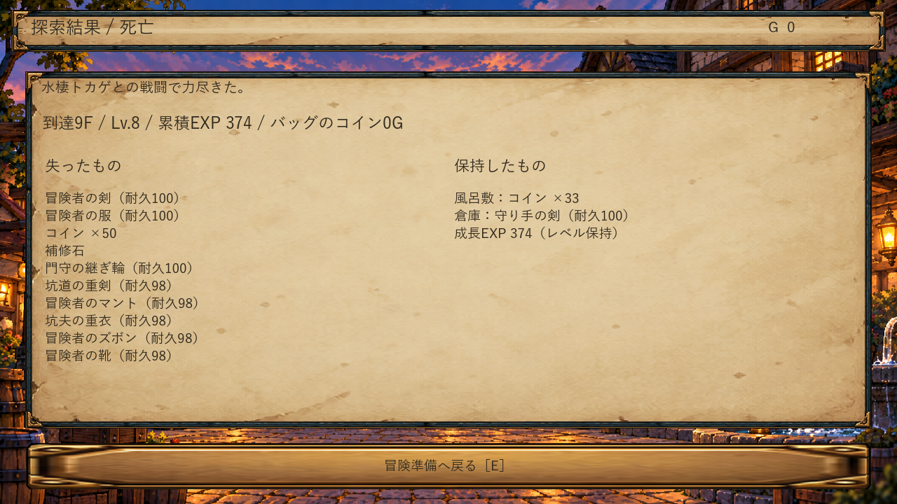
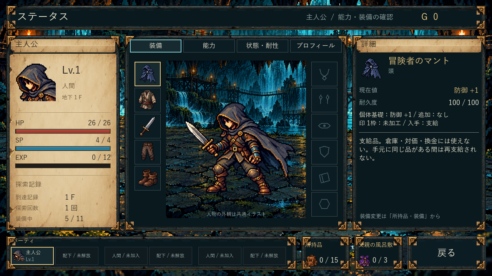
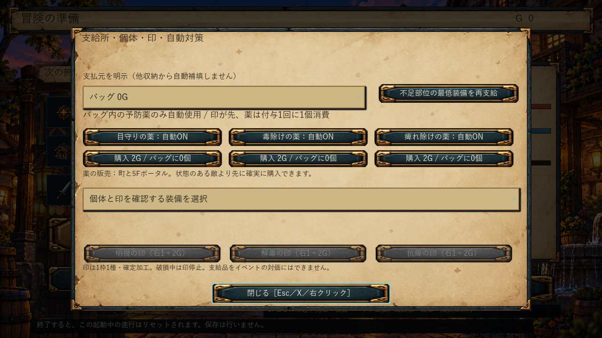
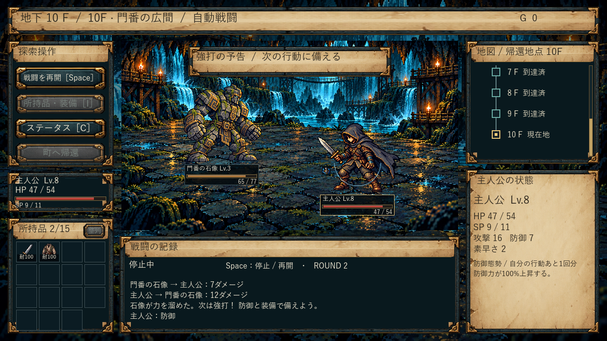
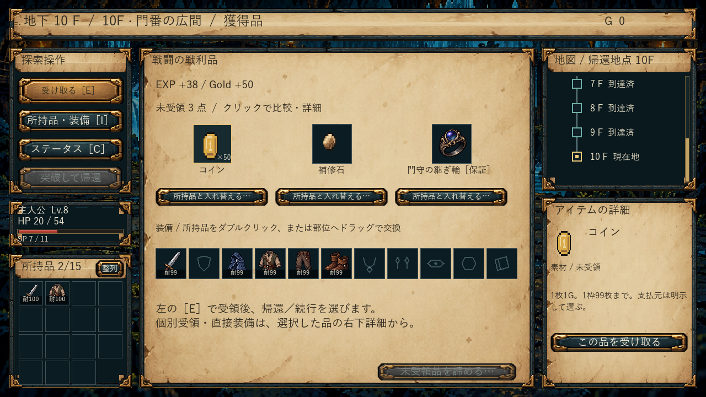
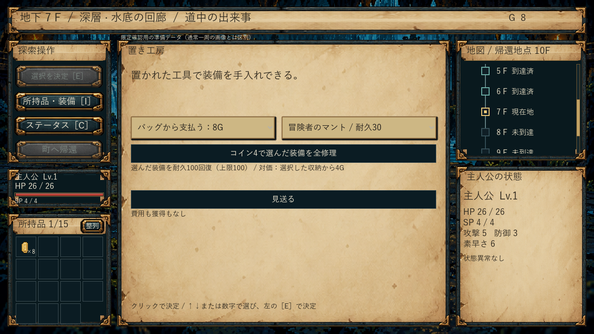
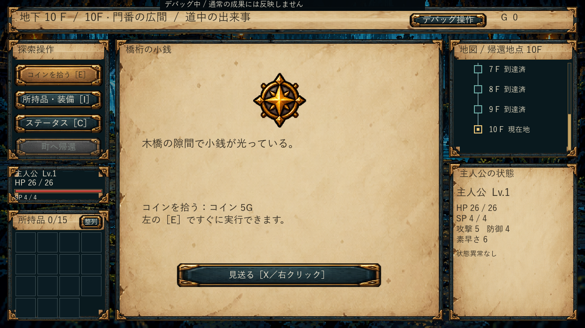

Dive In Under 0.9.0
装備を探し、備え、持ち帰り、再挑戦する
実装・限定技術確認済み。見た目・遊び・試作数値の採用はユーザー評価待ち。すべて配布EXEの実画面で、生成した参考UIではありません。
main 7b70a51 / CI 39418256675 / コア70件 / 隔離EXE85.522秒・終了0 / 22画面
いつもの「01 ゲームを起動」から。保存しないため終了でリセット。全損は装備とバッグ、風呂敷・倉庫・成長は保持。支給・通貨・ポータルと一組で反映します。
通常UIの新規→5F帰還は実入力。初突破・再討伐までの通常表は共通処理の実行記録。ボス・死亡・デバッグの画像は明示した準備データで、初回直行突破の証拠ではありません。
A 正本・仮値・履歴
SPECと7台帳、判断・未決・実装状況を整理。旧全文を履歴へ保全。
実装済み / 静的照合。現行と旧仕様を区別。
ユーザー評価：未評価 / 採用：未判断

B 全損・支給・コイン・ポータル
装備とバッグを全損、保護収納と成長を保持。不足部位へ支給。コイン分割・結合・明示支払。5F/10Fで停止。
実装済み / 共通処理と実EXEの死亡・支給・数量入力・5F帰還を確認。全GUI組合せは未確認。
ユーザー評価：未評価 / 採用：未判断

C 横の装備と固定個体
軽快・重打・守備、軽装・重装、指輪。主能力の均等ロール＋排他追加能力。印と耐久を分離。
実装済み / 交換・整理・修理で固定、満杯交換、HP付け外しで回復しないことを限定確認。
ユーザー評価：未評価 / 採用：未判断

D 状態異常と対策
後半の暗闇→毒→麻痺。町と5Fで薬を購入、バッグ実物を消費。印が先、破損時は薬へ。
実装済み / 毒を代表に印優先・薬1個・無料再発動なしを確認。全状態×全装備の総当たりは未実施。
ユーザー評価：未評価 / 採用：未判断

E 自動防御・石像の行動
通常→予告→強打→隙。通常枠の重みとHP条件、SP不足代替。防御は攻撃1手を使う。
実装済み / 予告・防御の実画面、HP分岐・SP不足・連用制限を限定確認。
ユーザー評価：未評価 / 採用：未判断

F 初突破と再入手
門守の継ぎ輪を初回保証、再討伐でも入手。保証を重複生成せず、満杯でも未受領保持。死亡例外なし。
実装済み / 初回受領・満杯直接装備・二重受領拒否・全損、通常表の再討伐を確認。
ユーザー評価：未評価 / 採用：未判断

G イベント台帳と実装
新規6件＋既存3件を通常表へ。費用と効果を一括確定。EV16/17は候補のみ。
実装済み / 無料／利益選択／HP・耐久・素材・コイン費用／確率を限定確認。個別GUI全件は未確認。
ユーザー評価：未評価 / 採用：未判断

H 独立デバッグ
専用起動・常時表示、次の1階の種類指定、いつでも帰還。実際の種類で判定。通常成果と分離。
実装済み / 3種置換のコア、10Fイベントと戦闘中帰還の実EXEを確認。専用Cmdの人間による起動は未確認。
ユーザー評価：未評価 / 採用：未判断

途中版からの表示修正（同条件の実画面比較）
通常・新規準備
限定データ・コイン収納
限定データ・初突破保証
デバッグ・10Fをイベントへ置換
途中版2eb3547・実画面確認済み0.9.0・実画面 全22画面
過去の0.8.1レビュー・原画像・評価履歴は保全。数値と仕様が異なるため、旧版との比較は配置と説明を中心に参照してください。
未確認：人間の物理入力での全10F通し、長時間・他PC・全seed、音声聴感。候補の手入れ台／蓄光苔、固有アートは未対応。今回、ローカルでゲームを起動していません。
実行ソース：7b70a518f8307febcb71c4797aafd1473c876130
ルール版：2026-10-20.adventure-provisional.1